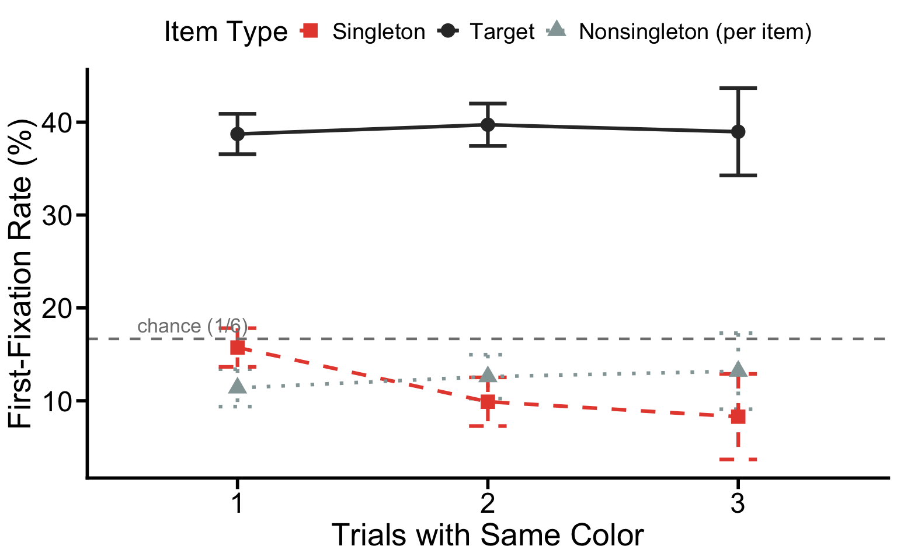
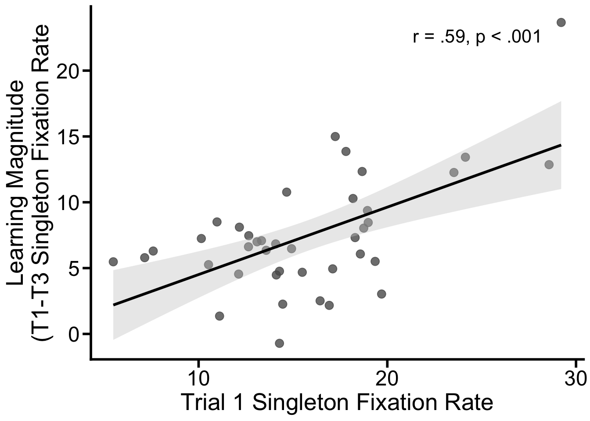

The projects should be numbered consecutively (i.e., in the order in which you began them), and should include for each project a description of the goal, the product (computer program, hand graph, computer graph, etc.), the data, and some interpretation. Reports must be reproducible and of high quality in terms of writing, grammar, presentation, etc.
The main analysis of target fixation rate only examined the target
row of firstfix2. But understanding where the freed
probability mass goes as singleton fixation drops is theoretically
important. If suppression actively redirects attention toward the goal,
target fixation should rise as singleton fixation falls. If suppression
is purely inhibitory, i.e., reducing the singleton’s pull without
boosting target priority, target fixation should stay flat and the freed
probability should flow instead to nonsingleton items.
This extension plots and tests all three item types (Singleton, Target, Nonsingleton per item) simultaneously across trials 1–3 in the search task.
rm(list = ls())
setwd("~/Documents/GitHub/DS4P_Portfolio")
library('NickPsych')
library('tidyverse')
library('reshape2')
library('writexl')
library('dplyr')
library('bruceR')
library('openxlsx')
library('knitr')
library('xtable')
library('patchwork')
# Load preprocessed data
accdata <- read.csv("/Users/mumizz./Desktop/2025-2026/Courses/Data science for psych/Experiment3/Analysis Script/accdata.csv")
# Plot theme (matching manuscript style)
axis_text_size <- 20
axis_tick_text_size <- 18
graph_color <- "black"
axis_tick_length <- 0.25
axis_tick_units <- "cm"
axis_thickness <- 1
manuscript_theme <- theme_classic() +
theme(
axis.line = element_line(linewidth = axis_thickness, colour = graph_color),
axis.title = element_text(size = axis_text_size),
axis.text = element_text(colour = graph_color, size = axis_tick_text_size),
axis.ticks = element_line(linewidth = axis_thickness, colour = graph_color),
axis.ticks.length.y = unit(axis_tick_length, axis_tick_units),
axis.ticks.length.x = unit(axis_tick_length, axis_tick_units),
legend.position = "top",
text = element_text(size = axis_tick_text_size)
)# firstfix2 (identical to the original script)
accdata2 <- subset(accdata, !is.na(SRT))
firstfix2 <- as.data.frame(
xtabs(~ curritem + subjnum + taskType + newtrial, data = accdata2)
)
# Total number of fixations on items in the display
firstfix2$total <- with(firstfix2, ave(Freq, interaction(subjnum, taskType, newtrial), FUN = sum))
# % of the toal each item was fixated
firstfix2$perc <- firstfix2$Freq / firstfix2$total
firstfix2$perc <- with(firstfix2,
ifelse(curritem == 'Nonsingleton', perc / 4, perc))
firstfix2$perc[is.nan(firstfix2$perc)] <- 0
firstfix2 <- firstfix2[, -c(5, 6)]# Descriptive table: all three item types
decomp_desc <- firstfix2 %>%
filter(taskType == "search") %>%
group_by(curritem, newtrial) %>%
summarise(M = round(mean(perc) * 100, 2),
SD = round(sd(perc) * 100, 2), .groups = "drop")
kable(decomp_desc,
caption = "Table 4. First-fixation rate (%) by item type and trial position — search task only. Nonsingleton is a per-item rate (divided by 4). Chance = 16.67% for all three categories.")| curritem | newtrial | M | SD |
|---|---|---|---|
| Nonsingleton | 1 | 11.39 | 2.99 |
| Nonsingleton | 2 | 12.60 | 3.20 |
| Nonsingleton | 3 | 13.19 | 3.44 |
| Singleton | 1 | 15.73 | 5.06 |
| Singleton | 2 | 9.90 | 5.41 |
| Singleton | 3 | 8.29 | 4.35 |
| Target | 1 | 38.72 | 14.79 |
| Target | 2 | 39.72 | 16.42 |
| Target | 3 | 38.97 | 16.72 |
To determine where the freed probability mass flows as singleton capture decreases, we examined all three item types simultaneously across trials 1–3 in the search task. Singleton fixation dropped gradually from 15.73% (SD = 5.06%) on Trial 1, to 9.88% (SD = 5.41%) on trial 2, then to 8.29% (SD = 4.35%) on trial 3.
sing_fix <- firstfix2 %>% filter(taskType == "search", curritem == "Singleton")
MANOVA(data = sing_fix,
subID = "subjnum",
dv = "perc",
within = 'newtrial',
sph.correction = "GG",
digits = 3) %>%
EMMEANS('newtrial')##
## * Data are aggregated to mean (across items/trials)
## if there are >=2 observations per subject and cell.
## You may use Linear Mixed Model to analyze the data,
## e.g., with subjects and items as level-2 clusters.##
## ====== ANOVA (Within-Subjects Design) ======
##
## Descriptives:
## ────────────────────────────
## "newtrial" Mean S.D. n
## ────────────────────────────
## newtrial1 0.157 (0.051) 40
## newtrial2 0.099 (0.054) 40
## newtrial3 0.083 (0.043) 40
## ────────────────────────────
## Total sample size: N = 40
##
## ANOVA Table:
## Dependent variable(s): perc
## Between-subjects factor(s): –
## Within-subjects factor(s): newtrial
## Covariate(s): –
## ────────────────────────────────────────────────────────────────────────────
## MS MSE df1 df2 F p η²p [90% CI of η²p] η²G
## ────────────────────────────────────────────────────────────────────────────
## newtrial 0.072 0.001 1.694 66.049 50.382 <.001 *** .564 [.430, .659] .299
## ────────────────────────────────────────────────────────────────────────────
## Sphericity correction method: GG (Greenhouse-Geisser)
## MSE = mean square error (the residual variance of the linear model)
## η²p = partial eta-squared = SS / (SS + SSE) = F * df1 / (F * df1 + df2)
## ω²p = partial omega-squared = (F - 1) * df1 / (F * df1 + df2 + 1)
## η²G = generalized eta-squared (see Olejnik & Algina, 2003)
## Cohen’s f² = η²p / (1 - η²p)
##
## Levene’s Test for Homogeneity of Variance:
## No between-subjects factors. No need to do the Levene’s test.
##
## Mauchly’s Test of Sphericity:
## ───────────────────────────────
## Mauchly's W p
## ───────────────────────────────
## newtrial 0.8191 .023 *
## ───────────────────────────────
##
## ------ EMMEANS (effect = "newtrial") ------
##
## Joint Tests of "newtrial":
## ──────────────────────────────────────────────────────
## Effect df1 df2 F p η²p [90% CI of η²p]
## ──────────────────────────────────────────────────────
## newtrial 2 39 57.665 <.001 *** .747 [.624, .818]
## ──────────────────────────────────────────────────────
## Note. Simple effects of repeated measures with 3 or more levels
## are different from the results obtained with SPSS MANOVA syntax.
##
## Estimated Marginal Means of "newtrial":
## ─────────────────────────────────────────
## "newtrial" Mean [95% CI of Mean] S.E.
## ─────────────────────────────────────────
## newtrial1 0.157 [0.141, 0.174] (0.008)
## newtrial2 0.099 [0.082, 0.116] (0.009)
## newtrial3 0.083 [0.069, 0.097] (0.007)
## ─────────────────────────────────────────
##
## Pairwise Comparisons of "newtrial":
## ────────────────────────────────────────────────────────────────────────────────────
## Contrast Estimate S.E. df t p Cohen’s d [95% CI of d]
## ────────────────────────────────────────────────────────────────────────────────────
## newtrial2 - newtrial1 -0.058 (0.009) 39 -6.264 <.001 *** -1.182 [-1.655, -0.710]
## newtrial3 - newtrial1 -0.074 (0.007) 39 -10.656 <.001 *** -1.508 [-1.862, -1.154]
## newtrial3 - newtrial2 -0.016 (0.007) 39 -2.342 .073 . -0.326 [-0.674, 0.022]
## ────────────────────────────────────────────────────────────────────────────────────
## Pooled SD for computing Cohen’s d: 0.049
## P-value adjustment: Bonferroni method for 3 tests.
##
## Disclaimer:
## By default, pooled SD is Root Mean Square Error (RMSE).
## There is much disagreement on how to compute Cohen’s d.
## You are completely responsible for setting `sd.pooled`.
## You might also use `effectsize::t_to_d()` to compute d.A one-way within-subjects ANOVA confirmed a significant effect of trial position on singleton fixation rate, F(1.69, 66.05) = 50.38, p < .001, η²p = .56 (Greenhouse-Geisser corrected; Mauchly’s W = 0.819, p = .023). Both contrasts against trial 1 were highly significant after Bonferroni correction, (1) trial 2 vs. trial 1, Mdiff = -5.85%, t(39) = -6.26, p < .001, Cohen’s d = -1.18, (2) trial 3 vs. trial 1, Mdiff = -7.44%, t(39) = -10.66, p < .001, Cohen’s d = -1.51. The trial 3 vs. trial 2 contrast was marginal after Bonferroni correction (t(39) = -2.34, p = .073, Cohen’s d = -.33), suggesting that the bulk of suppression development occurs on the first same-color repetition.
decomp_summary <- with(
firstfix2 %>%
filter(taskType == "search") %>%
mutate(group_label = paste(curritem, newtrial)),
cmErrBar(perc, subjnum, group_label, "ci")
) %>%
separate(group, into = c("item", "trial"), sep = " ") %>%
mutate(trial = factor(trial, levels = c("1", "2", "3")),
item = factor(item, levels = c("Singleton", "Target", "Nonsingleton")))
ggplot(decomp_summary,
aes(x = trial, y = mean * 100, group = item,
color = item, linetype = item, shape = item)) +
geom_errorbar(aes(ymin = minus * 100, ymax = plus * 100),
width = 0.15, linewidth = 1.1) +
geom_line(linewidth = 1.1) +
geom_point(size = 4) +
geom_hline(yintercept = 100 / 6, linetype = "dashed",
color = "gray50", linewidth = 0.8) +
annotate("text", x = 0.6, y = 100 / 6 + 1.5,
label = "chance (1/6)", color = "gray50", size = 4.5, hjust = 0) +
scale_color_manual(
values = c("Singleton" = "#E74C3C", "Target" = "#333333", "Nonsingleton" = "#95A5A6"),
labels = c("Singleton", "Target", "Nonsingleton (per item)")) +
scale_shape_manual(
values = c("Singleton" = 15, "Target" = 16, "Nonsingleton" = 17),
labels = c("Singleton", "Target", "Nonsingleton (per item)")) +
scale_linetype_manual(
values = c("Singleton" = "dashed", "Target" = "solid", "Nonsingleton" = "dotted"),
labels = c("Singleton", "Target", "Nonsingleton (per item)")) +
labs(x = "Trials with Same Color",
y = "First-Fixation Rate (%)",
color = "Item Type",
shape = "Item Type",
linetype = "Item Type") +
manuscript_theme
Figure S4. First-fixation rate (%) for each item type across trial positions in the search task. Chance baseline = 16.67% (dashed line). Error bars = 95% CI (Cousineau-Morey corrected).
The figure showed the first fixation rate for all three item types across the 3-trial same-color sequence in the search task. The target line sit flat approximately 39 throughout, well above the 16.67% chance baseline, indicating that target guidance is strong and entirely unaffected by the learning cycle. The singleton line told the opposite trend: it started near the chance at 15% on trial 1, then drops sharply to about 10% on trial 2 and falls further down to about 8% on trial 3, largely below chance by the end of the sequence. The nonsingleton line lay in at about 12% at trial 1 and drifts upward toward the chance line by trial 3.
Critically, the relationship between all three lines together might suggest: as the singleton line falls by approximately 8 percentage points across trials, the freed probability mass does not flow toward the target, i.e., remaining flat, but instead disperses to the nonsingleton items. This pattern is the hallmark of a purely inhibitory suppression process: the oculomotor system learns to remove the singleton’s attentional priority without actively redirecting attention toward the goal, such that the beneficiaries of suppression are random non-target locations rather than the item participants are actually searching for.
If being overtly captured by the singleton on trial 1 is what drives suppression learning, then participants who showed stronger T1 capture should show stronger T2/T3 suppression. This extension tests that prediction directly at the individual level using Pearson correlations between each participant’s T1 singleton fixation rate and their subsequent learning magnitude (T1−T3 reduction in singleton fixation).
# Per-participant singleton fixation rate in search task, wide format
sing_wide <- firstfix2 %>%
filter(taskType == "search", curritem == "Singleton") %>%
pivot_wider(names_from = newtrial, values_from = perc) %>%
rename(t1 = `1`, t2 = `2`, t3 = `3`)
# Learning magnitude = reduction in singleton fixation from T1 to T3
sing_wide$learning_t1_t3 <- sing_wide$t1 - sing_wide$t3
# Individual Differences: T1 Capture and Learning
# Correlation: T1 singleton rate vs. T3 singleton rate
cor1 <- cor.test(sing_wide$t1, sing_wide$t3, method = "pearson")
print(cor1)##
## Pearson's product-moment correlation
##
## data: sing_wide$t1 and sing_wide$t3
## t = 4.2548, df = 38, p-value = 0.0001317
## alternative hypothesis: true correlation is not equal to 0
## 95 percent confidence interval:
## 0.3116886 0.7473154
## sample estimates:
## cor
## 0.5680443# Correlation: T1 singleton rate vs. learning magnitude (T1 − T3)
cor2 <- cor.test(sing_wide$t1, sing_wide$learning_t1_t3, method = "pearson")
print(cor2)##
## Pearson's product-moment correlation
##
## data: sing_wide$t1 and sing_wide$learning_t1_t3
## t = 4.4635, df = 38, p-value = 6.98e-05
## alternative hypothesis: true correlation is not equal to 0
## 95 percent confidence interval:
## 0.3364364 0.7592749
## sample estimates:
## cor
## 0.5864808# T1 singleton rate vs. T2 singleton rate
cor3 <- cor.test(sing_wide$t1, sing_wide$t2, method = "pearson")
print(cor3)##
## Pearson's product-moment correlation
##
## data: sing_wide$t1 and sing_wide$t2
## t = 2.4365, df = 38, p-value = 0.01963
## alternative hypothesis: true correlation is not equal to 0
## 95 percent confidence interval:
## 0.06332575 0.60932232
## sample estimates:
## cor
## 0.3675839Three Pearson’s correlation analyses were conducted to examine whether individual difference in initial capture predicted subsequent learning. First, trial 1 singleton fixation rate was positively correlated with trial 3 singleton fixation rate, r = .57, t(38) = 4.25, p < .001, 95% CI[.31, .75], indicating that participants who were more strongly captured on Trial 1 still showed higher singleton fixation on trial 3 than others. Second, and more directly, trial 1 capture rate was positively correlated with learning magnitude (T1−T3 reduction), r = .59, t(38) = 4.46, p < .001, 95% CI[.34, .76], confirming that participants who experienced stronger initial capture showed greater suppression by Trial 3. This correlation allowed us to infer that high initial capture rate is associated with a larger learning rate within subjects. Furthermore, this relationship was detected by the 3rd correlation analysis: Trial 1 capture rate predicted Trial 2 singleton fixation rate, r = .37, t(38) = 2.44, p = .020, 95% CI[.06, .61], indicating that the learning advantage of high-capture individuals emerges as early as the first same-color repetition. Together, these correlations provide individual-level evidence for the capture-learning mechanism: the more strongly the oculomotor system was initially drawn to the singleton, the more forcefully it learned to suppress it, consistent with the interpretation that overt capture is not merely a correlate of the learning process but its primary driver.
ggplot(sing_wide, aes(x = t1 * 100, y = learning_t1_t3 * 100)) +
geom_point(size = 3, color = "gray35", alpha = 0.8) +
geom_smooth(method = "lm", se = TRUE,
color = "black", fill = "gray80", linewidth = 1.1) +
annotate("text",
x = max(sing_wide$t1 * 100) - 1,
y = max(sing_wide$learning_t1_t3 * 100) - 1,
label = "r = .59, p < .001",
hjust = 1, size = 5.5) +
labs(x = "Trial 1 Singleton Fixation Rate",
y = "Learning Magnitude\n(T1-T3 Singleton Fixation Rate") +
manuscript_theme## `geom_smooth()` using formula = 'y ~ x'
Figure S5. Scatter plot of Trial 1 singleton fixation rate vs. learning magnitude (Trial 1 − Trial 3 reduction). Each point = one participant. Line = OLS regression with 95% CI shading.